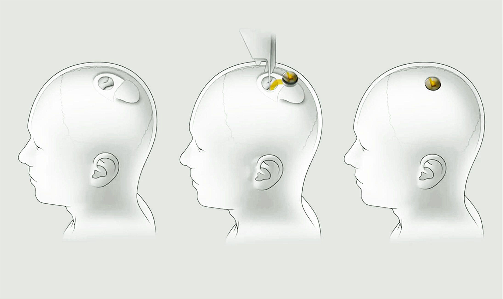
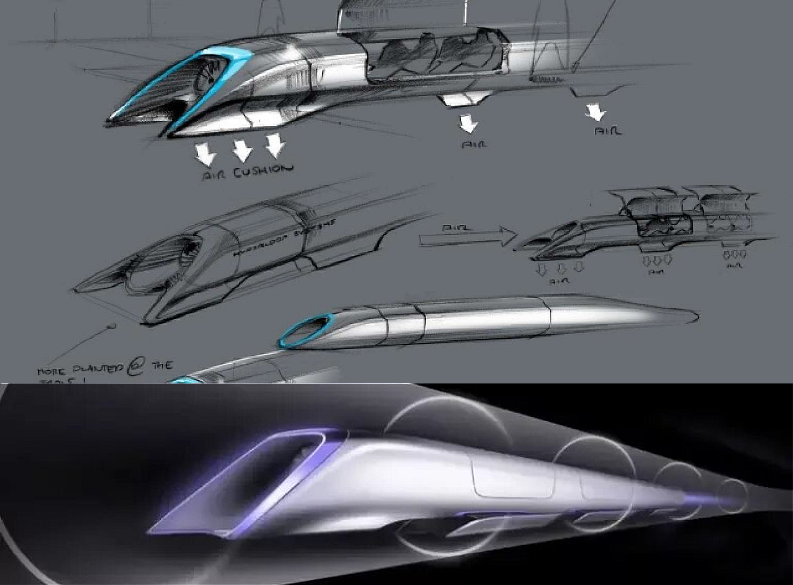

Tesla Autopilot
La fonction d'Autopilote est encore en développement,
il s'agit (pour l'instant) d'une aide à la conduite qui
a pour but de finalement devenir un pilotage automatique total.
L'autopilote complet déjà utilisé aux USA
rencontre encore
quelque problème; c'est pourquoi il est interdit en France mais
voila une vidéo enregistrer
par Tesla de l'autopilote
complet en action sur les routes américaines.

Qui est Elon Musk ?
Elon Musk est un ingénieur, chef d'entreprise et
milliardaire sud
africain né en 1971.
Il vend son premier jeu vidéo à 12 ans pour
500$.
Musk n'a pas peur de réver grand et il l'a prouvé
plusieurs fois en démmarant des projets impossible
pour la plupart des gens et en croyant en lui car
il est passer pas mal de fois proche de la faillite.
|
 |